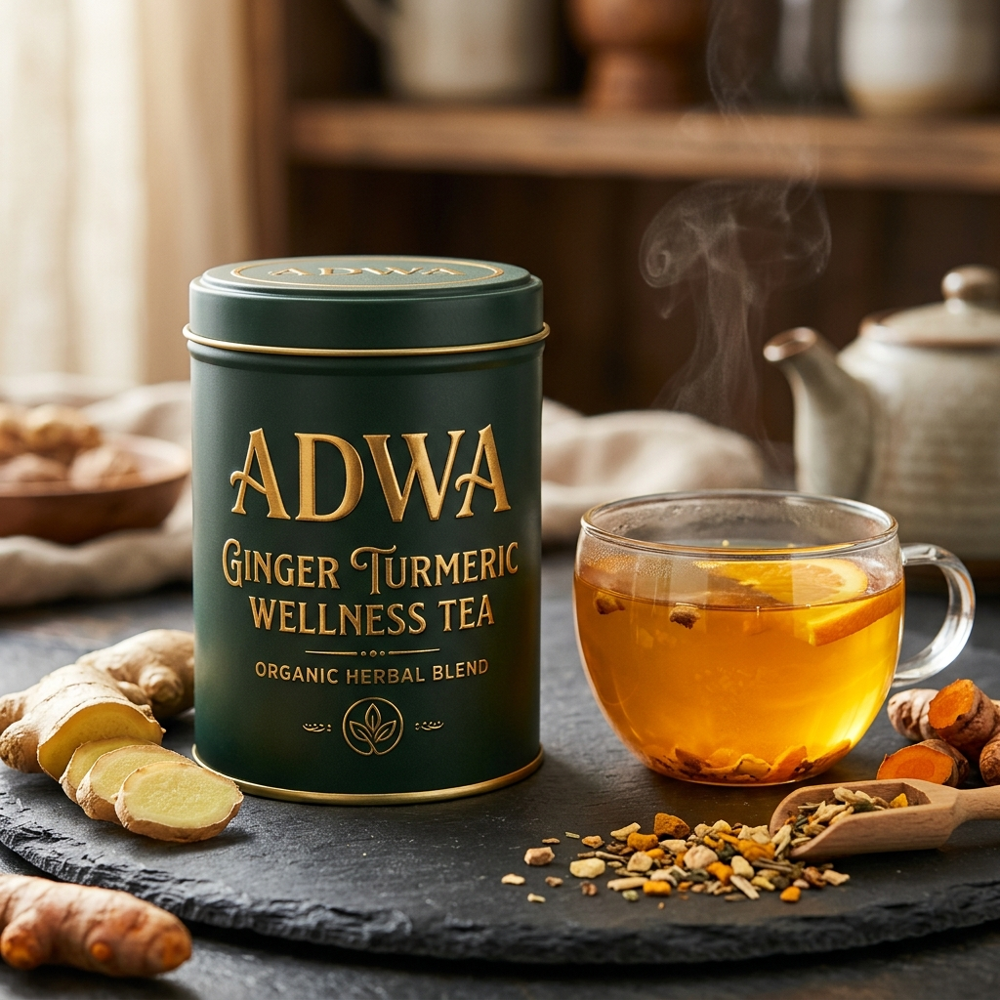

Strength from Ethiopia's Soil
Rooted in High-Altitude Botanicals
Founded in Addis Ababa, Adwa Supplements was born from an unwavering conviction: the Ethiopian highlands possess some of the most nutrient-dense, biologically potent botanicals on Earth.
From the wild highlands of Tigray and Gojjam where black seed (Tikur Azmud) flourishes, to the rift valley plains yielding pure moringa leaf, our team bridges ancient botanical wisdom with modern standardized formulation.
We do not use synthetic fillers, artificial colors, or imported additives. Every formula is tested in certified laboratories for microbiological purity and bioactive potency.

Why Adwa Stands Apart
Highland Potency
Ethiopia's unique altitude and volcanic soils produce botanicals with exceptionally concentrated polyphenols and antioxidants.
Lab Verified
Every single production lot undergoes third-party microbial and heavy-metal testing before reaching customer hands.
Local Value Chain
We partner directly with cooperative farming communities, keeping economic value and prosperity inside Ethiopia.